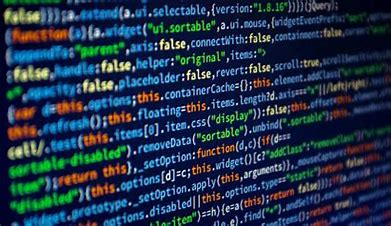

üìú Cos'√® un Algoritmo?
Un algoritmo è una sequenza finita e ordinata di istruzioni che permettono di risolvere un problema o eseguire un'operazione. Gli algoritmi sono fondamentali in informatica e vengono usati per creare software, gestire dati e ottimizzare processi. Possono essere semplici, come una ricetta di cucina, o complessi, come gli algoritmi di intelligenza artificiale utilizzati nei moderni sistemi informatici.
Ogni algoritmo deve essere definito con precisione e deve produrre un risultato corretto in un tempo finito. La qualità di un algoritmo si misura spesso in termini di efficienza, valutata attraverso la sua complessità temporale e spaziale.
⚙️ Struttura di un Algoritmo
Un algoritmo può essere rappresentato in diversi modi, come:
- Linguaggio naturale: Descrizione dettagliata a parole.
- Diagramma di flusso: Rappresentazione grafica con simboli per visualizzare il flusso delle operazioni.
- Pseudocodice: Una descrizione più formale e strutturata, indipendente dal linguaggio di programmazione.
Le componenti principali di un algoritmo includono:
- Input: Dati iniziali forniti dall'utente o da un sistema.
- Processo: Sequenza di operazioni logiche e matematiche.
- Output: Il risultato finale elaborato dal sistema.
Un buon algoritmo deve essere chiaro, efficiente e scalabile, in modo da poter gestire quantità di dati sempre maggiori.
üíª Cos'√® la Programmazione?
La programmazione è il processo di scrivere, testare e mantenere codice sorgente che permette a un computer di eseguire un algoritmo. I programmatori usano linguaggi di programmazione per scrivere software in modo comprensibile per le macchine.
La programmazione può essere suddivisa in diversi paradigmi, tra cui:
- Programmazione imperativa: Basata su istruzioni sequenziali (es. C, Python).
- Programmazione orientata agli oggetti: Usa concetti come classi e oggetti (es. Java, C++).
- Programmazione funzionale: Basata su funzioni matematiche (es. Haskell, Lisp).
- Programmazione logica: Basata sulla dichiarazione di regole logiche (es. Prolog).
Oggi la programmazione è alla base di ogni settore tecnologico, dall'intelligenza artificiale alla sicurezza informatica.
üñ• Linguaggi di Programmazione
Esistono diversi tipi di linguaggi di programmazione, tra cui:
- Linguaggi di basso livello: Come Assembly, molto vicini al linguaggio macchina e quindi più difficili da scrivere ma molto efficienti.
- Linguaggi di alto livello: Come Python, Java e C++, che sono più comprensibili per i programmatori e permettono di sviluppare software più velocemente.
- Linguaggi interpretati: Eseguiti riga per riga da un interprete (es. Python, JavaScript), il che li rende più flessibili ma spesso meno performanti rispetto ai linguaggi compilati.
- Linguaggi compilati: Tradotti in codice macchina prima dell'esecuzione (es. C++, Java) garantendo maggiore efficienza e velocità.
Ogni linguaggio ha i suoi vantaggi e viene usato in contesti diversi, dalla creazione di software gestionali allo sviluppo di videogiochi e applicazioni web. Ad esempio, Python è molto utilizzato in ambito scientifico e nell'intelligenza artificiale, mentre C++ è popolare nello sviluppo di videogiochi grazie alla sua efficienza.
⬅ Torna all'Indice